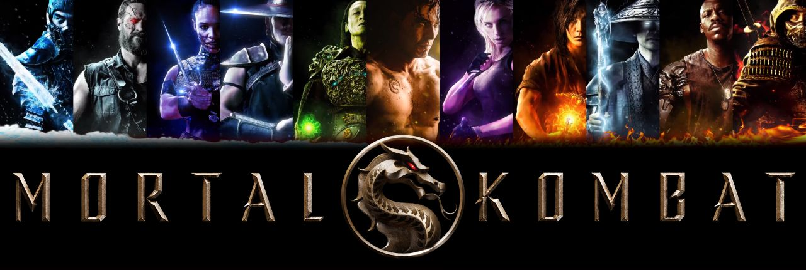

Jogos de Luta
Os jogos de luta têm uma história rica e uma cena competitiva vibrante, proporcionando aos jogadores a emoção de enfrentar adversários em combates mano a mano. Aqui está uma visão geral da história, competitividade e alguns dados sobre jogos de luta.
História:
Os jogos de luta têm suas raízes no gênero de jogos de arcade, com o lançamento de "Street Fighter" em 1987 pela Capcom. O jogo introduziu mecânicas de luta com personagens únicos e especiais, além de combos e movimentos especiais que se tornaram características do gênero. Ao longo das décadas seguintes, os jogos de luta evoluíram e expandiram-se com títulos icônicos, como a série "Mortal Kombat", "Tekken", "Super Smash Bros.", "Guilty Gear" e "Marvel vs. Capcom". Cada franquia trouxe novas mecânicas, estilos de luta e personagens, cativando os jogadores e fortalecendo a comunidade de jogos de luta.
Competitividade:
Os jogos de luta têm uma comunidade competitiva ativa e são um dos principais pilares dos eSports. Torneios de jogos de luta são realizados em todo o mundo, nos quais os jogadores profissionais e entusiastas competem para provar suas habilidades e alcançar a glória.
A EVO Championship Series é um dos maiores e mais prestigiosos eventos de jogos de luta. Ele reúne jogadores de diferentes franquias, incluindo "Street Fighter", "Tekken", "Super Smash Bros." e muitas outras, para disputarem prêmios significativos e conquistarem o título de campeão.
Além dos torneios offline, os jogos de luta também possuem uma forte presença online, com jogadores participando de partidas classificatórias e competindo em ligas e rankings.
Dados de jogos de luta:
Os jogos de luta atraem uma base de fãs apaixonados e têm uma longa história de sucesso. Aqui estão alguns dados interessantes sobre jogos de luta:

Street Fighter V
É um dos jogos de luta mais populares atualmente. Lançado em 2016 pela Capcom, o jogo mantém uma cena competitiva ativa e é um dos principais títulos do circuito de torneios de jogos de luta.
Super Smash Bros. Ultimate
Para Nintendo Switch é um dos jogos de luta mais vendidos de todos os tempos. O jogo combina personagens de várias franquias da Nintendo e de outras empresas, proporcionando uma experiência única de luta multiplayer.
Mortal Kombat
A série Mortal Kombat é conhecida por sua jogabilidade brutal e fatalities icônicos. A franquia é uma das mais antigas do gênero de jogos de luta, com uma história que remonta a 1992, e continua sendo uma das mais populares.
Tekken 7
Lançado em 2015, é outro exemplo de um jogo de luta de sucesso com uma cena competitiva robusta. O jogo apresenta um sistema de combate profundo e uma variedade de personagens carismáticos.
Muitos jogos de luta também possuem uma comunidade dedicada de modding, onde os jogadores criam e compartilham mods que adicionam novos personagens, trajes e outras personalizações ao jogo. Esses são apenas alguns dados gerais sobre a história, competitividade e informações sobre jogos de luta. O gênero continua a evoluir, trazendo novas mecânicas e personagens para encantar os fãs e fornecer emocionantes batalhas virtuais.